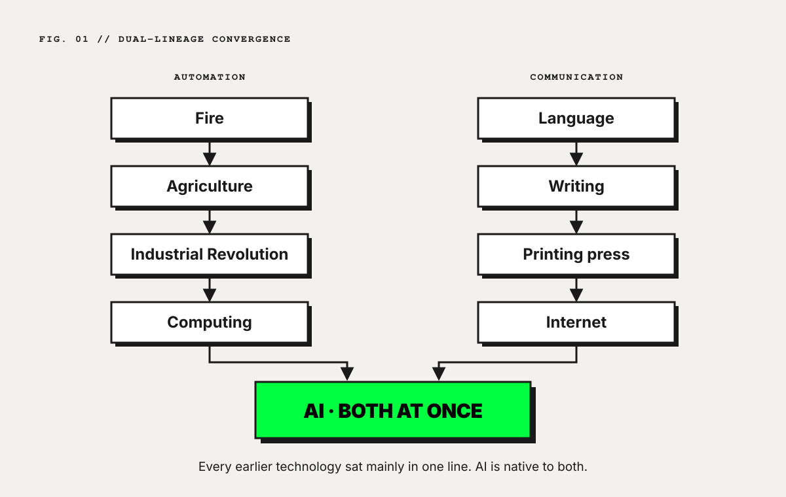

“They have the watches. But we have the time.” Afghan proverb, widely repeated during the Afghanistan wars.
1. The vertigo years, again
In 1900 an educated European had good reason to think the world was on a clear upward line. Industrial output was compounding, science was compounding, and the telegraph, the telephone and the mass-circulation newspaper were connecting people who had never been able to coordinate before. By 1914 the same continent had started the most destructive war it had ever fought.
The historian Philipp Blom calls the years between The Vertigo Years (Blom, 2008). His argument is that the period was defined by speed. Society was changing faster than its institutions could absorb, and the gap between what elites believed was happening (rational progress) and what most people lived through (acceleration without meaning, dislocation without belonging) produced radical politics first and war second.
I think we are back in that gap, and I think AI is the reason, because AI belongs to two lineages at once.
The first lineage is automation: turning energy into useful work. Fire, agriculture, the steam engine, the assembly line, the computer. Each one extended what human bodies and minds could do. AI extends it into reasoning, pattern recognition and synthesis, territory we used to treat as ours alone.
The second lineage is communication: moving meaning from one mind to another. Language, writing, the printing press, broadcast, the internet. Each one rebuilt the architecture of shared reality. AI extends this one too, and it changes its nature: for the first time the medium writes the message as well as carrying it.
Earlier technologies sat mostly in one lineage. The industrial revolution was an automation event whose effects on communication came later and second-hand. The internet was a communication event whose automation effects stayed limited until machine learning matured. AI is native to both, which is why it feels different. As far as I can tell, the alignment literature has not yet named this property; I call it dual lineage.

Europe’s coordinating institutions in 1914 (diplomacy, the press, parliaments, civil society) could not process the speed of change, and when trust collapsed they fell back on the one coordination mechanism that needs none: force. The question for 2026 is whether we are building institutions that can process the speed we are living through now. I don’t believe we are yet.
2. Alignment’s Kantian problem
The standard alignment question asks how to make AI systems act in line with human values. Built into the question is the assumption that human values form a coherent, stable object that can be written down, measured and optimized against. Two centuries of philosophy after Kant argue that they do not.
Kant’s Critique of Pure Reason (1781/1787) shows that reason has structural limits: we reach our representations of things, never the things in themselves, and the conditions that make experience possible are not themselves available to experience. A rational agent cannot fully specify the conditions under which its own rationality works. If that is right, then “align AI with human values” is an infrastructure problem before it is a specification problem.
The tradition that followed Kant split into several responses. Five of them line up closely with positions in today’s alignment debate, and each runs into the same wall.
| Philosophical response | Alignment parallel | Where it breaks |
|---|---|---|
| Hegel. Values emerge through a historical, collective process rather than being specified up front (Hegel, 1807). | Training from human feedback and constitutional methods, where values emerge through iteration (Christiano et al., 2017; Ouyang et al., 2022; Bai et al., 2022). | The process needs an institutional setting it can trust. Without one, the dialectic collapses into whoever holds power. |
| Pragmatism. Truth is what works in practice; values are discovered through action (James, 1907; Dewey, 1929). | Empirical safety work: evaluations and red-teaming (Ganguli et al., 2022). | It needs feedback loops that function. When the institutions supplying the feedback are captured or degraded, the loop fails without anyone noticing. |
| Phenomenology. Experience is always already shaped by conditions that come before reasoning; there is no stepping outside the lifeworld (Heidegger, 1927; Husserl, 1936). | Interpretability research: working out how models represent and structure information (Olah et al., 2020). | Culture, language and belonging are load-bearing structure for human understanding, and the research program treats them as background. |
| Accelerationism. The Enlightenment subject is a fiction that accelerating technical systems will expose and dissolve (Land, 2011). | Doomer and e/acc positions: the technology will do what it does, and the only choice is brake or throttle. | It sees how fragile the reasoning subject is, then concludes that the subject’s dissolution is either inevitable or welcome. |
| The rationalist community. Rebuild Enlightenment reason through Bayesian updating, decision theory and explicit argument (Yudkowsky, 2015). | Technical alignment: specify values formally, train toward them, verify them mathematically. | The most rigorous attempt inside the old frame, and it fails where Kant said it would: the conditions under which reasoning agents coordinate cannot themselves be fully specified by reasoning. |
All five positions sense that values come out of the conditions under which people coordinate. Then they part ways. The rationalists set the conditions aside, the accelerationists despair of them, and the labs leave them to someone else.
The Pretend Era framework (Hafiz, AXL-WP-04) takes a fourth route. The conditions themselves (trust, legitimacy, belonging, shared reality) are manufactured, through narrative, culture and institutional design, which means they can be manufactured on purpose. Mechanism design, the branch of economics that writes rules so that self-interested behavior produces the outcome the designer wants (Hurwicz, 1973), is the discipline for doing that.
None of this is an argument against technical alignment. It is an argument that technical alignment is necessary and far from sufficient. Picture the most carefully aligned model ever trained, released into a society without the trust to receive it. Its outputs land with people who cannot tell them apart from manipulation, are judged by institutions that have already lost their standing, and are governed by rules that trail the technology by years.
3. The trust gap around AI
Anthropic’s chief executive has described the company’s strategy as a “race to the top”: compete on safety, so that rivals have to match the standard (Amodei, 2023). In the terms of this essay that is a costly signal, an action expensive enough that a company only pretending to care about safety could not afford to copy it (Spence, 1973; Zahavi, 1975). It is the right instinct.
A costly signal still needs an audience able to read it. In the United States that audience is shrinking. Seventeen percent of Americans trust the federal government to do what is right always or most of the time, against 77% in 1964 (Pew Research Center, 2025a). Half of American adults say the growing use of AI in daily life makes them more concerned than excited; one in ten say the reverse (Pew Research Center, 2025b). Edelman’s 2026 barometer records a five-year net loss of 16 points in trust for national government leaders and 11 points for major news organizations (Edelman, 2026). A signal sent into that environment can be expensive and still go unread.
The table sets out where trust stands between AI developers and five groups they depend on, and what would have to be built for each.
| Stakeholder | Trust today | What follows | What would have to be built |
|---|---|---|---|
| The general public | Low and falling (Pew Research Center, 2025b) | Resistance to adoption, regulatory backlash, moral panic | Independent journalism able to check AI companies’ claims without serving their interests |
| Governments | Adversarial | Broad rules that are hard to fit to fast-moving systems, such as the EU’s AI Act (Regulation (EU) 2024/1689) | Accountability systems that give regulators reliable information and give citizens reliable oversight |
| AI companies, with each other | Competitive and guarded | Race dynamics that punish safety spending and reward speed | Coordination mechanisms that make safety-first strategies economically rational |
| AI workers | Ambivalent and exposed | Employees at frontier labs asking publicly for protection to raise risk concerns without retaliation (Right to Warn, 2024) | A culture in which safety work is valued socially and rewarded professionally |
| Communities living with AI’s effects | Largely absent from the conversation | No feedback loop between the people affected and the companies deploying | Mutual aid and community-voice structures that send real-time signal from the ground |
This is the same binding constraint the Pretend Era framework finds in every other domain it examines. Policy without trust arrives dead, journalism without legitimacy reads as noise, and a technology without social infrastructure lands in a society unready to take it.
The AI industry has spent heavily on compute, on training from human feedback, on constitutional methods, on red-teaming, on interpretability and on governance. Next to that, its spending on the social conditions that decide whether any of it earns public trust is small. I don’t read that as negligence. No existing discipline offers a tested method for building intangible infrastructure. Behavioral economics describes the mechanisms without operationalizing them for whole social systems. Political science describes institutions without designing interventions. Cultural strategy has the tools and mostly uses them to sell products. The proposal here joins the three.
4. What would build it
The Pretend Era framework proposes that intangible infrastructure can be produced by four coordinated functions, which it calls cylinders. Applied to the AI transition, each produces something specific.
| Cylinder | What it produces in the AI transition |
|---|---|
| Investigative journalism | Independently verified facts about what AI companies claim and what they do |
| Cultural production | Work that lets people feel the stakes as well as know them: film, music, documentary, games, humor |
| Mutual aid | Material support for people displaced or harmed by deployment, the commitment that shows the work has skin in the game |
| Public accountability | Public scorecards that compare companies’ stated commitments with their observable behavior, so that backing away from a safety commitment carries a visible cost |
The four are designed to work as one system: each one’s output feeds the next. How they are sequenced and coordinated is set out in the Cognitive Value Protocol (Hafiz, AXL-WP-03), and the operating detail is proprietary method, available to partners under NDA. The design goal is plain incentive engineering. AI companies, funders, journalists, artists and communities should each gain more from taking part honestly than from defecting.
The mechanism itself has already been shown to work. Over the past decade, partisan media ecosystems built identity, permission and loyalty at national scale with very little accountability (Benkler, Faris and Roberts, 2018). People decide with feeling and justify with reasoning afterward (Haidt, 2001), and those ecosystems were built on that fact. The open question is whether anyone will build the same machinery under constraint.
For a company that has made safety its identity, this is a practical problem as much as a philosophical one. The more it invests in a costly signal, the more it loses when the audience cannot receive the signal. If public trust in AI companies keeps falling, safety investment becomes steadily less visible to the people whose trust it was meant to earn. The infrastructure proposed here is the receiving end of that signal.
5. Three falsifiable predictions
Each prediction comes with a test and a statement of what failure would look like. If they fail, the framework has to be revised or dropped.
Prediction 1: trust-first companies outperform safety-only companies. AI companies that invest in external trust infrastructure (independent journalism, community feedback loops, public accountability, cultural production) will have measurably fewer regulatory crises, higher sustained adoption and greater long-term value than matched companies that put the same money into internal technical safety alone.
Test. A 36-month longitudinal comparison of the two groups, measured through regulatory incident frequency, public trust surveys, adoption curves and market value.
Failure looks like: no measurable advantage on any of those outcomes. That result would mean intangible infrastructure does not compound in AI the way it compounds in the other domains the framework covers.
Prediction 2: narrative interventions reduce AI moral panic. Communities that receive cultural production building emotional familiarity with AI, together with verified journalism about what it can and cannot do, will show less panic and more constructive engagement with AI governance than matched communities that receive the same budget as information alone: white papers, explainers, policy briefs.
Test. A 12-month comparison across matched communities. The treatment group gets the coordinated intervention; the control group gets an equal-cost information campaign. Measured through sentiment, participation in governance, policy adoption and behavioral indicators of engagement.
Failure looks like: no measurable difference between the groups. That would undercut the framework’s central claim, that narrative infrastructure changes a public’s capacity to absorb a new technology.
Prediction 3: the alignment tax is intangible. Over the next decade, most of the cost of AI going wrong will come from societies failing to coordinate a response to AI’s effects, more than from models doing harmful things. Regulatory failures, adoption collapses and public backlash events will trace primarily to trust deficits in more than 70% of cases. The threshold is set high enough that the prediction fails unless trust deficits clearly dominate, and low enough that it can actually be tested.
Test. A retrospective coding of AI-related crises over 36 months, each coded for primary cause: technical failure or trust and legitimacy failure.
Failure looks like: fewer than 70% of crises traced primarily to trust. That would mean the binding constraint in AI really is technical, and the diagnosis here is wrong for this domain.
6. The Ghazali precedent
About 930 years ago, Abu Hamid al-Ghazali faced a version of the same problem. The dominant intellectual school of his day, the Islamic Aristotelians, held that truth could be reached by reason alone. The religious establishment held that it could be reached by authority alone. Ghazali accepted neither.
In The Incoherence of the Philosophers (al-Ghazali, c. 1095/2000) he kept reason and showed its scope. Reason used without awareness of its own limits, he argued, produces conclusions that contradict lived experience and the conditions under which communities actually function. His critique was itself rational: a reasoned demonstration that reasoning has a range, and that mistaking that range for the whole of reality is its own kind of error.
The rationalist project of rebuilding Enlightenment reason through Bayesian updating and decision theory has the same structure as the project Ghazali examined: extending a rational method into territory where it cannot work without outside support. His point was that trust, community, practice and shared meaning are the conditions under which reason functions at all. Take them away and reason becomes a tool for clever people to justify what they already wanted. That is the Pretend Era in a sentence, described nearly a thousand years ago by a thinker Western intellectual history has mostly passed over.
7. The proposition
Human societies will absorb the AI transition whether or not anyone builds the infrastructure to manage it. How they absorb it depends on whether trust, legitimacy, belonging and shared reality are there when it arrives.
The technical alignment community has built remarkable tools for making AI systems behave as intended in controlled settings. Nobody has handed it the framework or the mandate to build the social infrastructure that connects those settings to the world the systems are released into. This essay proposes that such infrastructure can be built through mechanism design, tested through falsifiable predictions, and run as one coordinated system of journalism, cultural production, mutual aid and public accountability.
Aux Labs exists to build it. The architecture is offered for testing, and the predictions are commitments: if they fail, I will revise the theory or abandon it.
Technical alignment without social alignment is engineering in a vacuum. Blom’s Europe showed what happens when a society’s tools outrun its institutions, and Ghazali showed why reason alone cannot close that gap. We can learn from both or repeat them.
References
al-Ghazali, A. H. (c. 1095/2000). The Incoherence of the Philosophers (M. E. Marmura, Trans.). Brigham Young University Press.
Amodei, D. (2023, November 1). Dario Amodei’s prepared remarks from the AI Safety Summit on Anthropic’s Responsible Scaling Policy. Anthropic. https://www.anthropic.com/news/uk-ai-safety-summit
Bai, Y., Kadavath, S., Kundu, S., et al. (2022). Constitutional AI: Harmlessness from AI feedback. arXiv:2212.08073.
Benkler, Y., Faris, R., & Roberts, H. (2018). Network Propaganda: Manipulation, Disinformation, and Radicalization in American Politics. Oxford University Press.
Blom, P. (2008). The Vertigo Years: Europe, 1900–1914. Basic Books.
Christiano, P. F., Leike, J., Brown, T., Martic, M., Legg, S., & Amodei, D. (2017). Deep reinforcement learning from human preferences. Advances in Neural Information Processing Systems, 30.
Dewey, J. (1929). The Quest for Certainty. Minton, Balch.
Edelman. (2026). 2026 Edelman Trust Barometer. https://www.edelman.com/trust/2026/trust-barometer
Ganguli, D., Lovitt, L., Kernion, J., et al. (2022). Red teaming language models to reduce harms: Methods, scaling behaviors, and lessons learned. arXiv:2209.07858.
Haidt, J. (2001). The emotional dog and its rational tail: A social intuitionist approach to moral judgment. Psychological Review, 108(4), 814–834.
Hegel, G. W. F. (1807). Phänomenologie des Geistes (The Phenomenology of Spirit).
Heidegger, M. (1927). Sein und Zeit (Being and Time).
Hurwicz, L. (1973). The design of mechanisms for resource allocation. American Economic Review, 63(2), 1–30.
Husserl, E. (1936/1970). The Crisis of European Sciences and Transcendental Phenomenology (D. Carr, Trans.). Northwestern University Press.
James, W. (1907). Pragmatism: A New Name for Some Old Ways of Thinking. Longmans, Green.
Kant, I. (1781/1787). Kritik der reinen Vernunft (Critique of Pure Reason).
Land, N. (2011). Fanged Noumena: Collected Writings 1987–2007. Urbanomic.
Olah, C., Cammarata, N., Schubert, L., Goh, G., Petrov, M., & Carter, S. (2020). Zoom in: An introduction to circuits. Distill. https://distill.pub/2020/circuits/zoom-in/
Ouyang, L., Wu, J., Jiang, X., et al. (2022). Training language models to follow instructions with human feedback. Advances in Neural Information Processing Systems, 35.
Pew Research Center. (2025a, December 4). Public trust in government: 1958–2025. https://www.pewresearch.org/politics/2025/12/04/public-trust-in-government-1958-2025/
Pew Research Center. (2025b, September 17). How Americans view AI and its impact on people and society. https://www.pewresearch.org/science/2025/09/17/how-americans-view-ai-and-its-impact-on-people-and-society/
Regulation (EU) 2024/1689 of the European Parliament and of the Council laying down harmonised rules on artificial intelligence (Artificial Intelligence Act). Official Journal of the European Union, L series, 12 July 2024.
Right to Warn. (2024, June 4). A right to warn about advanced artificial intelligence. https://righttowarn.ai
Spence, M. (1973). Job market signaling. Quarterly Journal of Economics, 87(3), 355–374.
Yudkowsky, E. (2015). Rationality: From AI to Zombies. Machine Intelligence Research Institute.
Zahavi, A. (1975). Mate selection: A selection for a handicap. Journal of Theoretical Biology, 53(1), 205–214.
Hafiz, I. (2026). The Pretend Era: A Grand Unified Theory of Collapse, Narrative Power, and the Machinery of Repair. Aux Labs Working Paper AXL-WP-04.
Hafiz, I. (2026). The Cognitive Value Protocol: Scaling Societal Repair through Mechanism Design, Measurement, and Commons Governance. Aux Labs Working Paper AXL-WP-03.